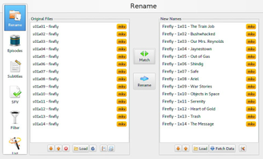
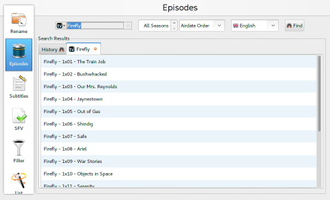
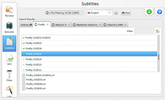
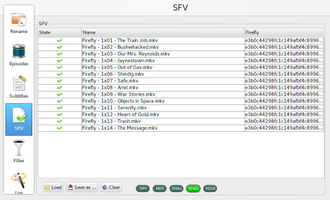
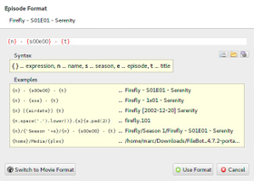

FileBot
Dieser Artikel wurde für die folgenden Ubuntu-Versionen getestet:
Ubuntu 16.04 Xenial Xerus
Zum Verständnis dieses Artikels sind folgende Seiten hilfreich:
FileBot  ermöglicht die automatisierte und einheitliche Umbenennung von Fernsehserien und Filmen durch die Verwendung von Film- und Seriendatenbanken wie z.B. The MovieDB , The TVDB und OMDB
ermöglicht die automatisierte und einheitliche Umbenennung von Fernsehserien und Filmen durch die Verwendung von Film- und Seriendatenbanken wie z.B. The MovieDB , The TVDB und OMDB  . Desweiteren kann man durch das Programm Untertitel von OpenSubtiles in über 30 Sprachen für die Filme und Serien herunterladen. Neben der Bedienung über die grafische Oberfläche kann das Programm ebenfalls als Kommandozeilenwerkzeug verwendet werden und z.B. in Skripten zum Einsatz kommen. Es ist zu beachten, dass die Version von der Projektseite kostenlos zur Verfügung steht. Die identische Version aus den Paketquellen ist käuflich zu erwerben!
. Desweiteren kann man durch das Programm Untertitel von OpenSubtiles in über 30 Sprachen für die Filme und Serien herunterladen. Neben der Bedienung über die grafische Oberfläche kann das Programm ebenfalls als Kommandozeilenwerkzeug verwendet werden und z.B. in Skripten zum Einsatz kommen. Es ist zu beachten, dass die Version von der Projektseite kostenlos zur Verfügung steht. Die identische Version aus den Paketquellen ist käuflich zu erwerben!
|  |  |
| Dateiumbenennung | Episodenliste |
Installation¶
Vorbereitung¶
Zur Verwendung des Programms benötigt man eine Java-Laufzeitumgebung. Zusätzlich wird das Paket
openjfx
 mit apturl
mit apturl
Paketliste zum Kopieren:
sudo apt-get install openjfx
sudo aptitude install openjfx
benötigt [1].
Programm¶
Ubuntu Software-Center¶
FileBot kann über das Programm Ubuntu Software käuflich erworben werden. Dazu ist eine Registrierung bzw. ein Zugang zu Ubuntu One erforderlich, welchen man sich aber auch während des Zahlungsprozesses über das Ubuntu Software Center anlegen kann. Anschließend wird das Programm automatisch heruntergeladen und installiert. Für zukünftige Updates wird ebenfalls automatisch eine neue Paketquelle hinzugefügt. Für die Zahlung ist eine Kreditkarte erforderlich.
filebot
mit apturl
Paketliste zum Kopieren:
sudo apt-get install filebot
sudo aptitude install filebot
|  |  |
| Untertitel | SFV |
Projektseite¶
Von der Projektseite die aktuelle Version herunterladen  . Es stehen zwei Varianten zur Verfügung. Eine portable Version (FileBot_VERSION-portable.zip) und ein .deb-Paket (filebot_4.7.2_ARCHITEKTUR.deb).
. Es stehen zwei Varianten zur Verfügung. Eine portable Version (FileBot_VERSION-portable.zip) und ein .deb-Paket (filebot_4.7.2_ARCHITEKTUR.deb).
Das .deb-Paket wie gewohnt [2] aufspielen. Über filebot kann das Programm gestartet [3] werden.
Hat man sich für die portable Variante entschieden genügt es das Archiv an den gewünschten Ort zu entpacken [4]. Durch den Aufruf von ./filebot.sh kann das Programm aus dem Verzeichnis heraus aufgerufen [3] [5] werden.
Hinweis:
In diesem Paket sind Mediainfo und die native Unterstützung von 7Zip nicht enthalten.
Hinweis!
Fremdpakete können das System gefährden.
|  |
| Namensschema |
Konfiguration¶
Sprache¶
Als erstes einen Rechtsklick  im Programmfenster ausführen und den Punkt "Preferences" auswählen. Im sich nun öffnenden Menü die folgenden Einstellungen vornehmen: "Match Mode" auf "Opportunistic" stellen, als Sprache "German " definieren und "Episode Order" auf "Airdate Order" festlegen.
im Programmfenster ausführen und den Punkt "Preferences" auswählen. Im sich nun öffnenden Menü die folgenden Einstellungen vornehmen: "Match Mode" auf "Opportunistic" stellen, als Sprache "German " definieren und "Episode Order" auf "Airdate Order" festlegen.
Hinweis:
Diese Änderungen wirken sich lediglich auf die Titel der Filme und Serien aus. Die Menüsprache ist davon nicht betroffen.
Namensschema¶
Wählt man nach dem Rechtsklick den Punkt "Edit Format" aus so ist es möglich das Namensschema der Serien (Episode Format) Filme (Movie Format) und Musiktitel (Music Format) zu ändern. Über "Switch to..." wechselt man zwischen den Einstellungsmöglichkeiten. "Use Format" übernimmt die Einstellungen.
Bedienung¶
Die Bedienung des Programms ist nach einer kurzen Eingewöhnungsphase einfach gehalten.
| Bedienung | |
| Menüpunkt: | Beschreibung: |
| "Rename" | Nachdem man die Dateien/Ordner zur Umbenennung per D&D hinzugefügt hat klickt man die Schaltfläche "Match" an und wählt die Datenbank aus, welche für diesen Medientypen durchsucht werden soll. Über "Rename" werden die Dateien umbenannt. |
| "Episodes" | Über die Episodensuche den gewünschten Titel suchen und über einenRechtsklick und die Punkte "Send to → Rename" das Ergebnis zur Umbenennung weiterleiten. |
| "Subtitles" | In der Suchmaske wird der Titel eingegeben. Es wird eine Auswahl an gefundenen Daten angezeigt. Mittels eines Doppelklicks werden die gewünschten Dateien heruntergeladen. Anschießend führt man einen Linksklick  auf die Datei aus und markiert diese. Über einen Rechtsklick gelangt man zum Punkt "Save As..." und speichert die Auswahl. Über "Preview" gelangt man zur Vorschau. auf die Datei aus und markiert diese. Über einen Rechtsklick gelangt man zum Punkt "Save As..." und speichert die Auswahl. Über "Preview" gelangt man zur Vorschau. |
| "SFV" | Durch das SFV-Format wird anhand der Prüfsumme die Integrität einer Datei überprüft. Über diesen Punkt können ebenfalls Prüfsummen für Videosammlungen erstellt werden. |
| "Filter" | Ordner nach verschiedenen Details sortieren. |
Hinweis:
Für die Verwendung der Untertitelfunktion ist ein Zugang bei opensubtitles.org notwendig.
Terminal¶
FileBot kann aus der Kommandozeile heraus aufgerufen und kann auch in eigenen Skripten verwendet werden.
Einen kleinen Überblick gibt die folgende Tabelle:
| Terminalbefehle | |
| Befehl: | Beschreibung: |
| filebot -rename Pfad/mit/den/Episoden | Episoden und Filme umbenennen. |
| filebot -rename "One Piece" --db anidb -non-strict | Serienepisoden mit der Datenbank AniDB umbenennen. Alternative kann man für Serien TheTVDB verwenden. Bei Filmen kommt TheMovieDB und OMDb zum Einsatz. |
| filebot -rename "1x01.avi" --q "Dexter" --db TheTVDB --lang de | Eine einzelne Folge mit dem erzwungenen Serientitel auf Deutsch umbenennen. Rename a single episode forcing the series name. |
| filebot -get-subtitles Pfad/mit/den/Episoden | Fehlende/Passende Untertitel für die im Ordner befindlichen Titel herunterladen. |
| filebot -get-subtitles path/to/movie --q "Avatar" --lang zh --output srt --encoding utf8 -non-strict | Passende Untertitel für den definierten Film herunterladen und das Ausgabeformat erzwingen. |
Eine Vielzahl weiterer Beispiele und Beschreibungen findet man auf der Seite FileBot CLI Command-line interface usage manual . Im Forum finden sich weitere Hilfestellungen.
- Erstellt mit Inyoka
-
 2004 – 2017 ubuntuusers.de • Einige Rechte vorbehalten
2004 – 2017 ubuntuusers.de • Einige Rechte vorbehalten
Lizenz • Kontakt • Datenschutz • Impressum • Serverstatus -
Serverhousing gespendet von